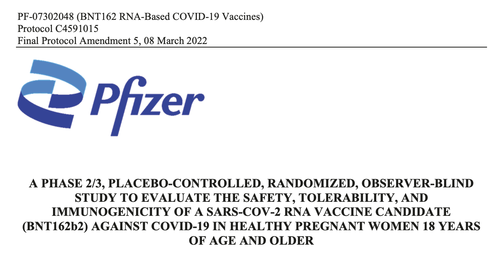
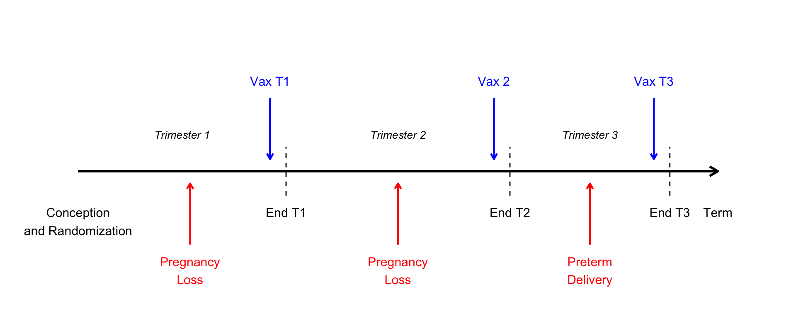

2024-10-31
One solution
The target trial framework forces us to be explicit about who, what, when, and how (I guess where too, but not usually as much of a problem!)
Many observational studies don’t have a clear “time zero” when treatment assignment occurs
Example: Comparing pregnancy outcomes in:
When are they “assigned” to exposure groups?
If we define groups based on what actually happened during pregnancy:
The exposed group had to survive long enough (e.g. remain pregnant) to take the medication!
A hypothetical randomized trial that would answer your causal question if it could be conducted
Note
The target trial is a design concept, not an analysis method. It has guided study design in epidemiology for decades but recently popularized as an explicit framework (Miguel A. Hernán and Robins 2016).
Randomized trials have clear advantages for causal inference:
Randomized trials have clear advantages for causal inference:
We know we can’t run the randomized trial we want to conduct to answer our causal question (lack of resources, unethical to randomize, impossible to provide certain treatments/exposures, too many years of follow-up needed, too many treatment strategies to compare, etc.)
The observational study should be designed so as to match up with this trial as closely as possible
Warning
Don’t jump straight to emulation without carefully thinking through the trial, though it can be helpful to think ahead. Compromises in emulation should be explicit and justified.
Note
Recently published guidelines for reporting target trial emulations detail these components: Cashin et al. (2025)
Besides making for a clearer question with more practical implications, eligibility criteria can help address confounding in the emulation by ensuring everyone included has a reasonable chance of getting the treatment strategies being compared*
The eligibility criteria also define when people enter the study
Each strategy represents an intervention we could imagine putting in motion at time zero for a given treatment arm:
Tip
It’s helpful to read through existing randomized trials on similar questions to see how they defined these components, see clinicaltrials.gov for ideas!

| Components | Target trial |
|---|---|
| Causal question | What is the effect of SARS-CoV-2 mRNA vaccine BNT162b2 on COVID-19? |
| Eligibility criteria | Inclusion criteria:
Exclusion criteria:
|
| Treatment strategies | 1. Two vaccination doses 2. No SARS-CoV-2 vaccination until the end of pregnancy |
| Assignment procedures | 1:1 randomization into the two treatment arms, stratified by gestational week |
| Follow-up | Since administering the first dose and up to 1 month post delivery |
| Outcome | SARS-CoV-2 infection as determined by positive PCR test or clinical COVID-19 diagnosis |
| Causal contrast | Incidence rate ratios; intention-to-treat (one vaccine dose) and per-protocol (two doses) |
It may feel weird to design a target trial for other types of causal questions
It’s worth thinking through anyway to make sure you are clear about your causal question of interest (you don’t have to publish it as a “target trial”!)
| Components | Target trial | |
| Causal question | What is the effect of COVID-19 infection on preterm delivery? | |
| Eligibility criteria | 1. Pregnant individuals with gestational age 12-36 weeks. 2. No known previous SARS-CoV-2 infection 3. No previous vaccination for COVID-19 |
|
| Treatment strategies | 1. Symptomatic COVID-19 within a week after enrollment. 2. No SARS-CoV-2 infection for the rest of the pregnancy. |
|
| Assignment procedures | Randomization at enrollment, stratified by gestational age (in weeks). | |
| Follow-up | Patients are followed from the time of COVID-19 testing or enrollment (time zero) until delivery, loss to follow-up, or administrative end of follow-up. | |
| Outcome | Preterm delivery, defined as delivery before 37 completed weeks of gestation. | |
| Causal contrast | Intention-to-treat effect on the risk ratio and risk difference scales for each gestational week (time zero) |
| Components | Target trial | |
| Eligibility criteria |
|
|
| Treatment strategies |
|
|
| Assignment procedures |
|
|
| Follow-up |
|
|
| Outcome |
|
|
| Causal contrast |
|
Avalos et al. (2023)
Caniglia et al. (2018)
Chiu et al. (2024)
Wong et al. (2024)
Key features/challenges:
Key features/challenges:
Key features/challenges:
Key features/challenges:
This example is somewhat based on an example about comparing duration of treatment in Miguel A. Hernán (2018)
Eligibility: Unvaccinated, at/soon after conception
Treatment strategies:
Outcome: Live birth (yes/no)

Note
We are simplifying things by assuming vaccination happens at the end of a trimester, after any pregnancy losses
16 pregnant people randomly assigned to 4 strategies:
| Person | Assigned strategy | Loss T1 | Vax T1 | Loss T2 | Vax T2 | Preterm | Vax T3 | Term birth | Live birth |
|---|---|---|---|---|---|---|---|---|---|
| A | 0 | 0 | 0 | 0 | 0 | 0 | 0 | 1 | 1 |
| B | 0 | 0 | 0 | 0 | 0 | 1 | - | - | 1 |
| C | 0 | 0 | 0 | 1 | - | - | - | - | 0 |
| D | 0 | 1 | - | - | - | - | - | - | 0 |
| E | 1 | 0 | 1 | 0 | 0 | 0 | 0 | 1 | 1 |
| F | 1 | 0 | 1 | 0 | 0 | 1 | - | - | 1 |
| G | 1 | 0 | 1 | 1 | - | - | - | - | 0 |
| H | 1 | 1 | - | - | - | - | - | - | 0 |
| I | 2 | 0 | 0 | 0 | 1 | 0 | 0 | 1 | 1 |
| J | 2 | 0 | 0 | 0 | 1 | 1 | - | - | 1 |
| K | 2 | 0 | 0 | 1 | - | - | - | - | 0 |
| L | 2 | 1 | - | - | - | - | - | - | 0 |
| M | 3 | 0 | 0 | 0 | 0 | 0 | 1 | 1 | 1 |
| N | 3 | 0 | 0 | 0 | 0 | 1 | - | - | 1 |
| O | 3 | 0 | 0 | 1 | - | - | - | - | 0 |
| P | 3 | 1 | - | - | - | - | - | - | 0 |
By assigned strategy:
| Assigned strategy | N | Live births | Probability |
|---|---|---|---|
| 0 | 4 | 2 | 0.5 |
| 1 | 4 | 2 | 0.5 |
| 2 | 4 | 2 | 0.5 |
| 3 | 4 | 2 | 0.5 |
All strategies have 50% live birth rate (we are operating in a situation where the null hypothesis of no effect of vaccination at any time is true)
In observational data, we don’t see the assigned strategy.
We only see what actually happened:
Let’s classify people by observed vaccination status and timing…
Same 16 people, but now we don’t know their assigned strategy:
| Person | Observed treatment | Loss T1 | Vax T1 | Loss T2 | Vax T2 | Preterm | Vax T3 | Term birth | Live birth |
|---|---|---|---|---|---|---|---|---|---|
| A | 0 (Never) | 0 | 0 | 0 | 0 | 0 | 0 | 1 | 1 |
| B | 0 (Never) | 0 | 0 | 0 | 0 | 1 | - | - | 1 |
| C | 0 (Never) | 0 | 0 | 1 | - | - | - | - | 0 |
| D | 0 (Never) | 1 | - | - | - | - | - | - | 0 |
| E | 1 (Vax T1) | 0 | 1 | 0 | 0 | 0 | 0 | 1 | 1 |
| F | 1 (Vax T1) | 0 | 1 | 0 | 0 | 1 | - | - | 1 |
| G | 1 (Vax T1) | 0 | 1 | 1 | - | - | - | - | 0 |
| H | 0 (Never) | 1 | - | - | - | - | - | - | 0 |
| I | 2 (Vax T2) | 0 | 0 | 0 | 1 | 0 | 0 | 1 | 1 |
| J | 2 (Vax T2) | 0 | 0 | 0 | 1 | 1 | - | - | 1 |
| K | 0 (Never) | 0 | 0 | 1 | - | - | - | - | 0 |
| L | 0 (Never) | 1 | - | - | - | - | - | - | 0 |
| M | 3 (Vax T3) | 0 | 0 | 0 | 0 | 0 | 1 | 1 | 1 |
| N | 0 (Never) | 0 | 0 | 0 | 0 | 1 | - | - | 1 |
| O | 0 (Never) | 0 | 0 | 1 | - | - | - | - | 0 |
| P | 0 (Never) | 1 | - | - | - | - | - | - | 0 |
Classify by when they actually got vaccinated:
| Observed vaccination | N | Live births | Probability |
|---|---|---|---|
| 0 (Never) | 10 | 3 | 0.30 |
| 1 (Vax T1) | 3 | 2 | 0.67 |
| 2 (Vax T2) | 2 | 2 | 1.00 |
| 3 (Vax T3) | 1 | 1 | 1.00 |
Later vaccination appears highly protective!
But: People who got vaccinated later had to survive to that point
In a randomized trial, people are assigned to strategies at time zero – even if they don’t get treatment (by choice, not surviving long enough, etc.), they are analyzed in their assigned group*
Generally the not-treated group will underestimate the true risk, and the treated group will overestimate it (the later treated, or longer duration required, the more the bias):
| Strategy | True probability | Naive estimate | Bias |
|---|---|---|---|
| 0 (Never) | 0.50 | 0.30 | ↓ |
| 1 (Vax T1) | 0.50 | 0.67 | ↑ |
| 2 (Vax T2) | 0.50 | 1.00 | ↑↑ |
| 3 (Vax T3) | 0.50 | 1.00 | ↑↑ |
This makes treatment appear to reduce risk when there is actually no effect (or if there were a true effect of treatment, this might mask it)
Pretend you have a randomized trial in which everyone is assigned to all strategies at time zero:
For each person, create clones for all treatment strategies
| Person | Assigned strategy | Loss T1 | Vax T1 | Loss T2 | Vax T2 | Preterm | Vax T3 | Term birth | Live birth |
|---|---|---|---|---|---|---|---|---|---|
| A-0 | 0 | 0 | 0 | 0 | 0 | 0 | 0 | 1 | 1 |
| B-0 | 0 | 0 | 0 | 0 | 0 | 1 | - | - | 1 |
| C-0 | 0 | 0 | 0 | 1 | - | - | - | - | 0 |
| D-0 | 0 | 1 | - | - | - | - | - | - | 0 |
| E-0 | 0 | 0 | 1 | 0 | 0 | 0 | 0 | 1 | 1 |
| F-0 | 0 | 0 | 1 | 0 | 0 | 1 | - | - | 1 |
| G-0 | 0 | 0 | 1 | 1 | - | - | - | - | 0 |
| H-0 | 0 | 1 | - | - | - | - | - | - | 0 |
| I-0 | 0 | 0 | 0 | 0 | 1 | 0 | 0 | 1 | 1 |
| J-0 | 0 | 0 | 0 | 0 | 1 | 1 | - | - | 1 |
| K-0 | 0 | 0 | 0 | 1 | - | - | - | - | 0 |
| L-0 | 0 | 1 | - | - | - | - | - | - | 0 |
| M-0 | 0 | 0 | 0 | 0 | 0 | 0 | 1 | 1 | 1 |
| N-0 | 0 | 0 | 0 | 0 | 0 | 1 | - | - | 1 |
| O-0 | 0 | 0 | 0 | 1 | - | - | - | - | 0 |
| P-0 | 0 | 1 | - | - | - | - | - | - | 0 |
| Person | Assigned strategy | Loss T1 | Vax T1 | Loss T2 | Vax T2 | Preterm | Vax T3 | Term birth | Live birth |
|---|---|---|---|---|---|---|---|---|---|
| A-1 | 1 | 0 | 0 | 0 | 0 | 0 | 0 | 1 | 1 |
| B-1 | 1 | 0 | 0 | 0 | 0 | 1 | - | - | 1 |
| C-1 | 1 | 0 | 0 | 1 | - | - | - | - | 0 |
| D-1 | 1 | 1 | - | - | - | - | - | - | 0 |
| E-1 | 1 | 0 | 1 | 0 | 0 | 0 | 0 | 1 | 1 |
| F-1 | 1 | 0 | 1 | 0 | 0 | 1 | - | - | 1 |
| G-1 | 1 | 0 | 1 | 1 | - | - | - | - | 0 |
| H-1 | 1 | 1 | - | - | - | - | - | - | 0 |
| I-1 | 1 | 0 | 0 | 0 | 1 | 0 | 0 | 1 | 1 |
| J-1 | 1 | 0 | 0 | 0 | 1 | 1 | - | - | 1 |
| K-1 | 1 | 0 | 0 | 1 | - | - | - | - | 0 |
| L-1 | 1 | 1 | - | - | - | - | - | - | 0 |
| M-1 | 1 | 0 | 0 | 0 | 0 | 0 | 1 | 1 | 1 |
| N-1 | 1 | 0 | 0 | 0 | 0 | 1 | - | - | 1 |
| O-1 | 1 | 0 | 0 | 1 | - | - | - | - | 0 |
| P-1 | 1 | 1 | - | - | - | - | - | - | 0 |
Censor clones when their observed data becomes incompatible with assigned strategy:
If there is a pregnancy loss in T1, do not censor afterward–we don’t know whether they would have gotten vaccinated or not (can contribute to multiple strategies)
Selection bias introduced by censoring must be corrected
Use inverse probability weighting:
This varies over time, and can be calculated as the product of interval-specific probabilities:
\[ \text{Prob(uncensored at time } t) = \prod_{k=0}^{t} \text{Prob(uncensored at } k \mid \text{uncensored at } k-1) \]
That is, the probability of still being uncensored at the end of T3 is:
the probability of not being censored in T1
times the probability of not being censored in T2 (given not censored in T1)
times the probability of not being censored in T3 (given not censored in T1 or T2)
# A tibble: 16 × 10
person assigned loss_t1 vax_t1 loss_t2 vax_t2 preterm vax_t3 term livebirth
<chr> <dbl> <dbl> <dbl> <dbl> <dbl> <dbl> <dbl> <dbl> <dbl>
1 A 0 0 0 0 0 0 0 1 1
2 B 0 0 0 0 0 1 NA NA 1
3 C 0 0 0 1 NA NA NA NA 0
4 D 0 1 NA NA NA NA NA NA 0
5 E 1 0 1 0 0 0 0 1 1
6 F 1 0 1 0 0 1 NA NA 1
7 G 1 0 1 1 NA NA NA NA 0
8 H 1 1 NA NA NA NA NA NA 0
9 I 2 0 0 0 1 0 0 1 1
10 J 2 0 0 0 1 1 NA NA 1
11 K 2 0 0 1 NA NA NA NA 0
12 L 2 1 NA NA NA NA NA NA 0
13 M 3 0 0 0 0 0 1 1 1
14 N 3 0 0 0 0 1 NA NA 1
15 O 3 0 0 1 NA NA NA NA 0
16 P 3 1 NA NA NA NA NA NA 0Each person is cloned into 4 copies (one for each vaccination strategy: 0, 1, 2, 3)
cloned_data <- trial_data %>%
crossing(strategy = 0:3) %>%
relocate(strategy, .after = person)
cloned_data %>%
count(strategy)# A tibble: 4 × 2
strategy n
<int> <int>
1 0 16
2 1 16
3 2 16
4 3 1616 people × 4 strategies = 64 rows
censored_data <- cloned_data %>%
mutate(
# T1: only at risk if survived T1
censored_t1 = case_when(
loss_t1 == 1 ~ NA, # Already had outcome
strategy %in% c(0, 2, 3) & vax_t1 == 1 ~ TRUE, # Deviated by vaccinating
strategy == 1 & vax_t1 == 0 ~ TRUE, # Deviated by not vaccinating
.default = FALSE # Followed strategy
),
# T2: only at risk if uncensored and unvaccinated at T1 and survived T2
censored_t2 = case_when(
is.na(censored_t1) | censored_t1 ~ NA, # Already censored or had outcome at T1
loss_t2 == 1 ~ NA, # Had outcome at T2
vax_t1 == 1 ~ NA, # Already had vax at T1
strategy %in% c(0, 3) & vax_t2 == 1 ~ TRUE, # Deviated by vaccinating
strategy == 2 & vax_t2 == 0 ~ TRUE, # Deviated by not vaccinating
.default = FALSE # Followed strategy
),
# T3: only at risk if uncensored and unvaccinated at T2 and survived T3
censored_t3 = case_when(
is.na(censored_t2) | censored_t2 ~ NA, # Already censored or had outcome at T2
preterm == 1 ~ NA, # Had outcome at T3
vax_t1 == 1 | vax_t2 == 1 ~ NA, # Already had vax at T1 or T2
strategy == 0 & vax_t3 == 1 ~ TRUE, # Deviated by vaccinating
strategy == 3 & vax_t3 == 0 ~ TRUE, # Deviated by not vaccinating
.default = FALSE # Followed strategy
),
# Final censoring: censored if ANY time point is TRUE
censored = (censored_t1) | (censored_t2) | (censored_t3),
censored = replace_na(censored, FALSE)
)Different numbers contribute to each strategy:
censored_data %>%
group_by(strategy) %>%
summarise(
n_total = n(),
censored_t1 = sum(censored_t1 == TRUE, na.rm = TRUE),
censored_t2 = sum(censored_t2 == TRUE, na.rm = TRUE),
censored_t3 = sum(censored_t3 == TRUE, na.rm = TRUE),
total_censored = sum(censored),
uncensored = sum(!censored)
)# A tibble: 4 × 7
strategy n_total censored_t1 censored_t2 censored_t3 total_censored uncensored
<int> <int> <int> <int> <int> <int> <int>
1 0 16 3 2 1 6 10
2 1 16 9 0 0 9 7
3 2 16 3 4 0 7 9
4 3 16 3 2 1 6 10Probability of vaccination can be used to calculate interval-specific censoring probabilities
NA for vaccination status and/or subset to those not previously censored or vaccinated(For strategy 1, already censored if not vaccinated in T1 so no one “at risk for” censoring here)
(For strategies 1 and 2, already censored if not vaccinated in T1 or T2 so no one “at risk for” censoring here)
Weight = 1 / (cumulative probability of not being censored)
weighted_data <- censored_data %>%
mutate(
# Probability of not being censored at each time point
prob_not_cens_t1 = case_when(
is.na(censored_t1) ~ 1, # Not at risk
strategy == 1 ~ p_vax_t1, # Strategy 1: needs vax at T1
strategy %in% c(0, 2, 3) ~ 1 - p_vax_t1, # No vax at T1
TRUE ~ 1
),
prob_not_cens_t2 = case_when(
is.na(censored_t2) ~ 1, # Not at risk
strategy == 2 ~ p_vax_t2, # Strategy 2: needs vax at T2
strategy %in% c(0, 3) ~ 1 - p_vax_t2, # No vax at T2
TRUE ~ 1
),
prob_not_cens_t3 = case_when(
is.na(censored_t3) ~ 1, # Not at risk
strategy == 3 ~ p_vax_t3, # Strategy 3: needs vax at T3
strategy == 0 ~ 1 - p_vax_t3, # No vax at T3
TRUE ~ 1
),
# Cumulative probability = product
cum_prob_not_censored = prob_not_cens_t1 * prob_not_cens_t2 * prob_not_cens_t3,
# Weight = inverse probability (only for uncensored)
weight = if_else(!censored, 1 / cum_prob_not_censored, 0)
)Uncensored individuals and their weights:
weighted_data %>%
filter(!censored) %>%
group_by(strategy) %>%
summarise(
sum_weights = sum(weight),
weighted_livebirths = sum(livebirth * weight),
risk_livebirth = weighted_livebirths / sum_weights
)# A tibble: 4 × 4
strategy sum_weights weighted_livebirths risk_livebirth
<int> <dbl> <dbl> <dbl>
1 0 16.0 8.00 0.500
2 1 16.0 8.00 0.500
3 2 16.0 8.00 0.500
4 3 16.0 8.00 0.500The three steps:
Miguel A. Hernán et al. (2008) Cain et al. (2010) Young et al. (2011) Miguel A. Hernán et al. (2016) Miguel A. Hernán and Robins (2016) Labrecque and Swanson (2017) Miguel A. Hernán (2018) Caniglia et al. (2019) Dickerman et al. (2019) Chiu et al. (2020) Maringe et al. (2020) Ben-Michael, Feller, and Stuart (2021) Gaber et al. (2024) Cashin et al. (2025) Fu et al. (2025) Moreno-Betancur, Wijesuriya, and Carlin (2025)
What pregnancy research questions are you working on?
How might you apply target trial thinking?
What challenges do you anticipate?
What tools or resources would be most helpful?
email: l.smith@northeastern.edu
{kind=link}